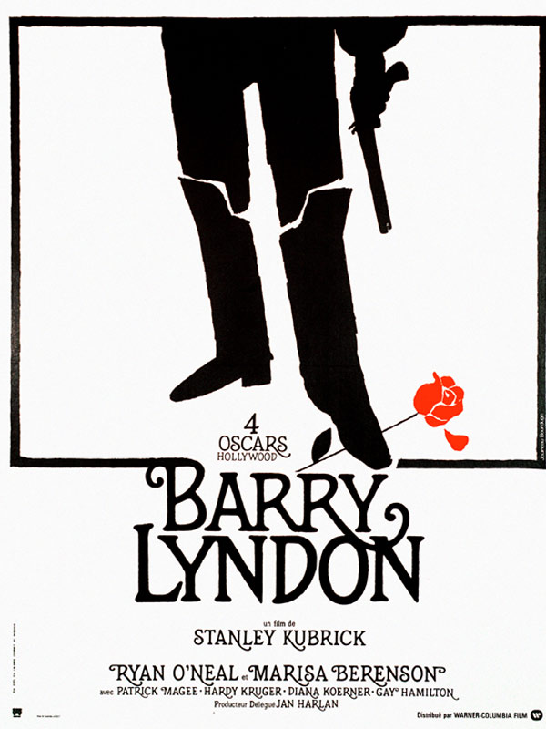
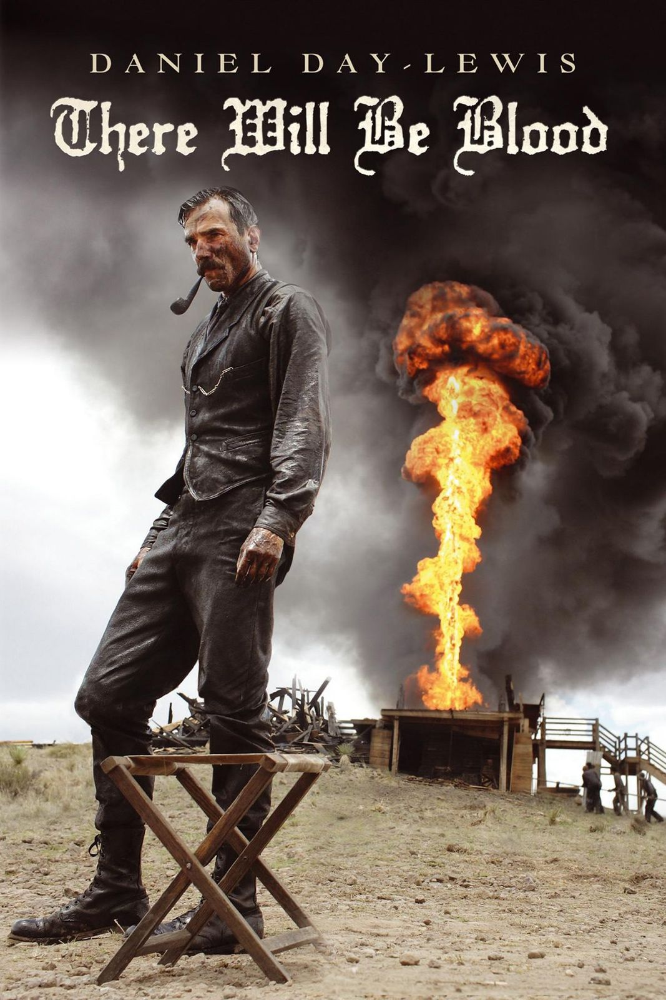
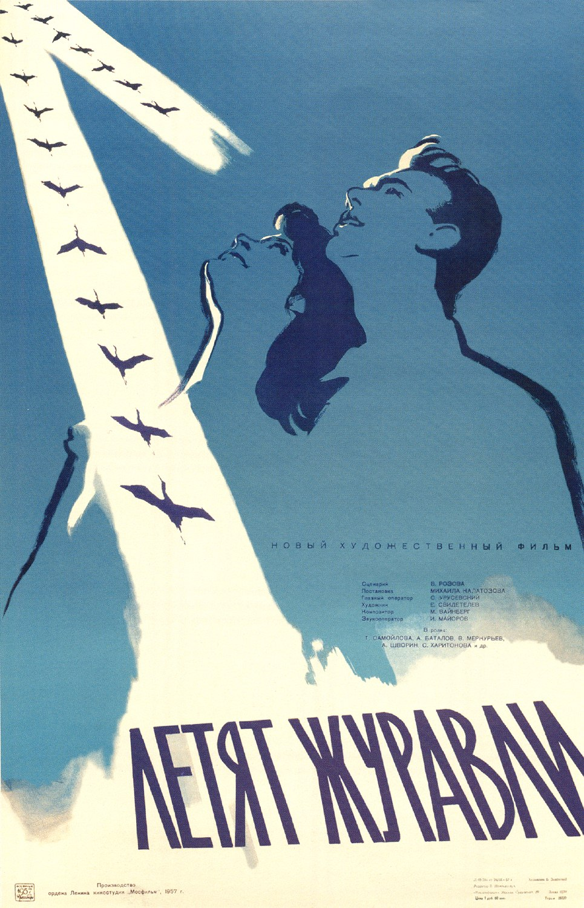

Always imited, never duplicated. I rule in every way possible. This piece of HTML art displays all my professional and personal achievements. So scroll down, suckers !
|  | The life of a guy who wants to rule. But in the end, he fails miserably. What a dweeb. In the end, the narrator states that Barry went first back to Ireland with his mother, then to the European continent to resume his former profession of gambler. See ? How's that for a spoiler !! |
|  | Not really a story about a effin BLOOD BATH. Prepare nonetheless for TRUE BRUTALITY as Daniel Day Lewis drinks gallons of milkshake for 3 hours. Btw, did you know that this actor has left his craft before to follow a passion project: learning how to cobble shoes ? What a loser |
|  | Now that's what I call drama, and it's been made by soviet Russia, which was by far the best dictatorship ever. Fun fact: this movie was the only Mosfilm to win a Palme d'Or. Not surprising, when you know how much Russian propaganda sucked |